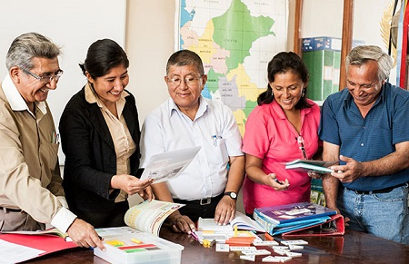
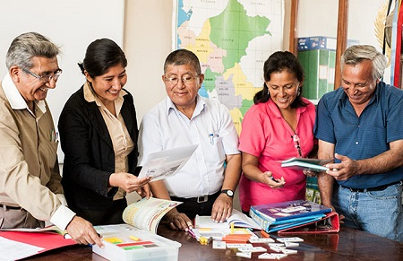

Síganos en...
Síganos en Nuestras Redes Sociales y podrá enterarse de nuevas Noticias. Podrá compartir
e interactuar con otros usuarios diferentes vivencias, historias y anecdotas. Que esperas, ven por
tu hijo(a). Síganos en Nuestras Redes Sociales y podrá enterarse de nuevas Noticias. Podrá compartir
e interactuar con otros usuarios diferentes vivencias, historias y anecdotas.


 
